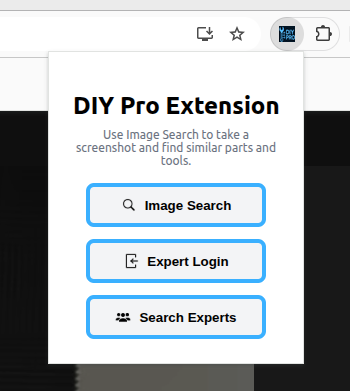
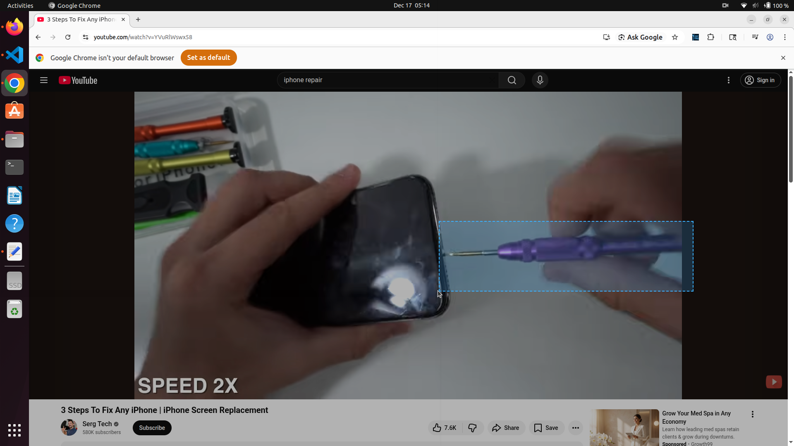
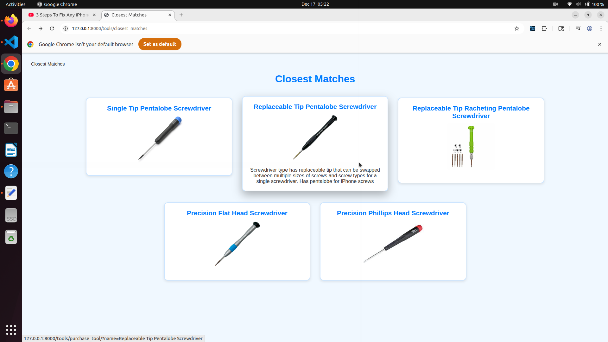
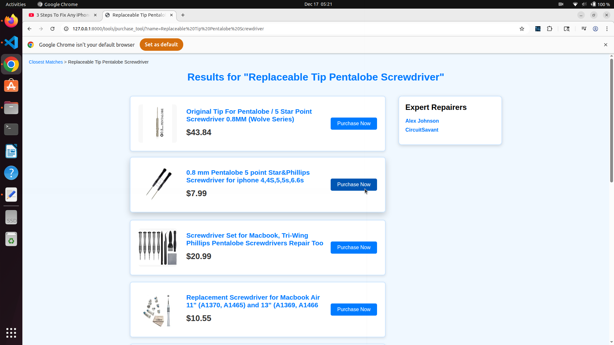
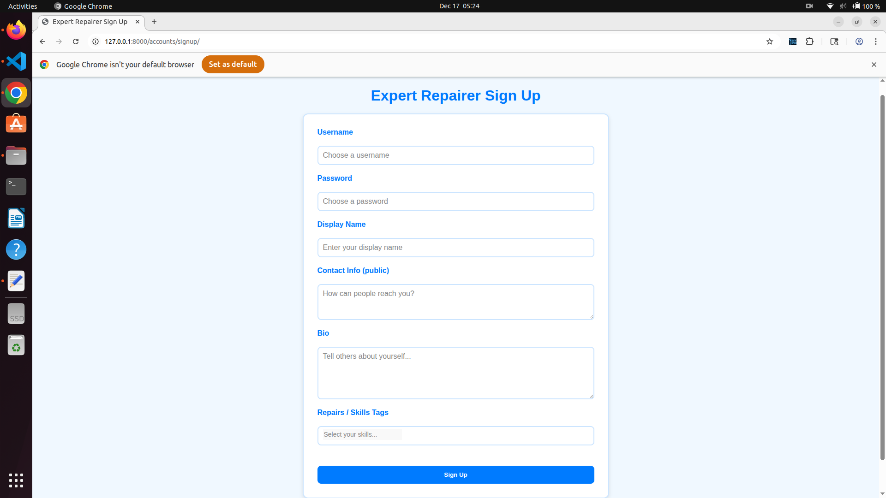
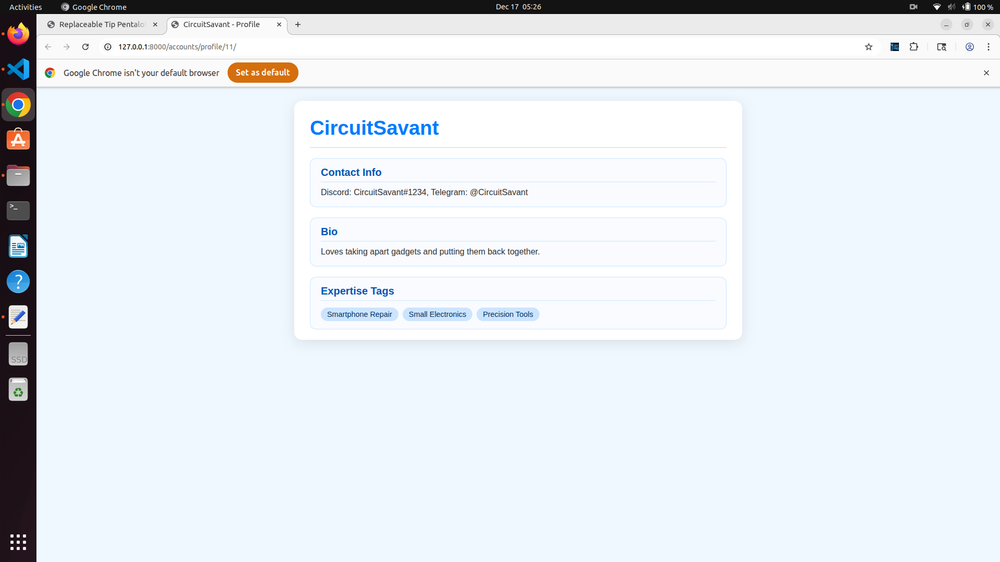
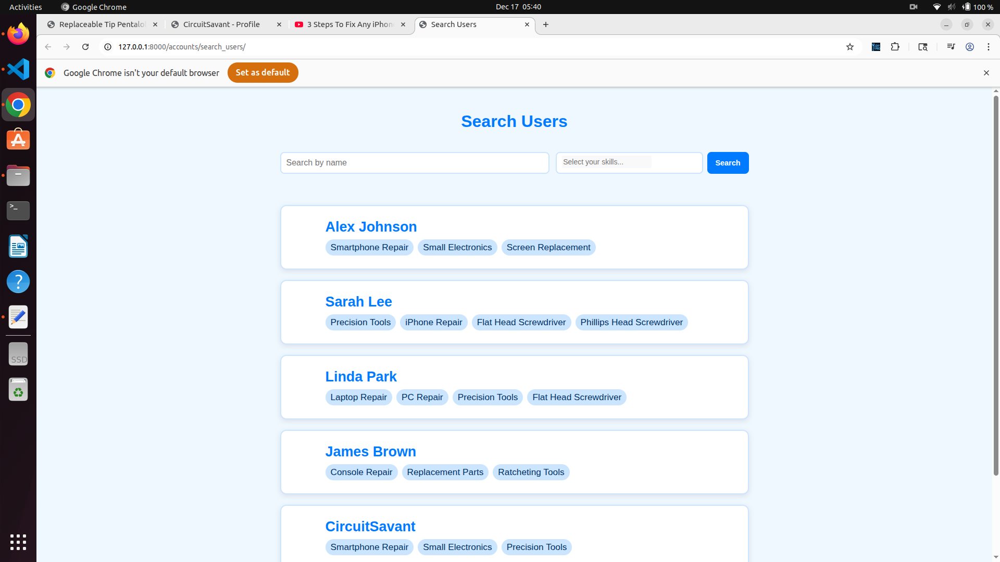

Level 6
High Fidelity Prototyping
With many recommendations on how to improve our design, we moved forward into the high fidelity prototyping phase. Our main goals were to learn how to build high-fidelity, interactive prototypes with code, as well as understand the tradeoffs and platform constraints compared to low-fi and med-fi prototyping.
Design Focus
We focused on designing our product in two separate sections: the web extension and the website. We wanted to build our design on top of already existing infrastructure, so we used Google’s instructions on making web extensions.
Prototyping Process
We worked through writing all the code we needed by referencing our Figma prototype throughout the process, which guided us towards our final design.
Evaluation & Iteration
We also evaluated our design throughout the process with other people, trying to get a sense of the usability of our model. Each time we had someone test our design, we would make multiple changes in order to make the system easier to use and understand.
High Fidelity Prototype
This is what our final high fidelity prototype looked like. Refer back to (Level 4) for more on why we made these aspects of our product.
Extension

An image of what our extension looks like. This is the main place for navigation.Tool Image Search

Here is what our extension looks like while screenshotting an image.
After screenshotting, a tab pops up with all the identified closest matches and a description of each match.View Purchasing Options

After selecting the closest match, our backend searches through eBay for the tool and pulls up purchasing options. Clicking the Purchas Now button will pop up the eBay listing. The page also shows registered expert repairers that users can contact.Register as Expert Repairer

This is what our signup page looks like for expert repairers. They enter in username, password, display name, contact information, bio, and tag themself with specific repairs or skills.
This is what the expert repairer profile looks like to other users.Search Experts

During our high fidelity prototyping, we added in an additional feature to search through the expert database. This way, if a user had a general repair question, they could search for specific tags or even for a specific expert.